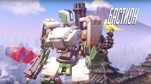
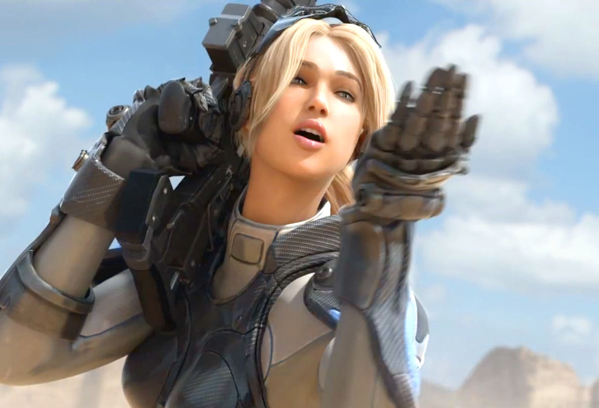
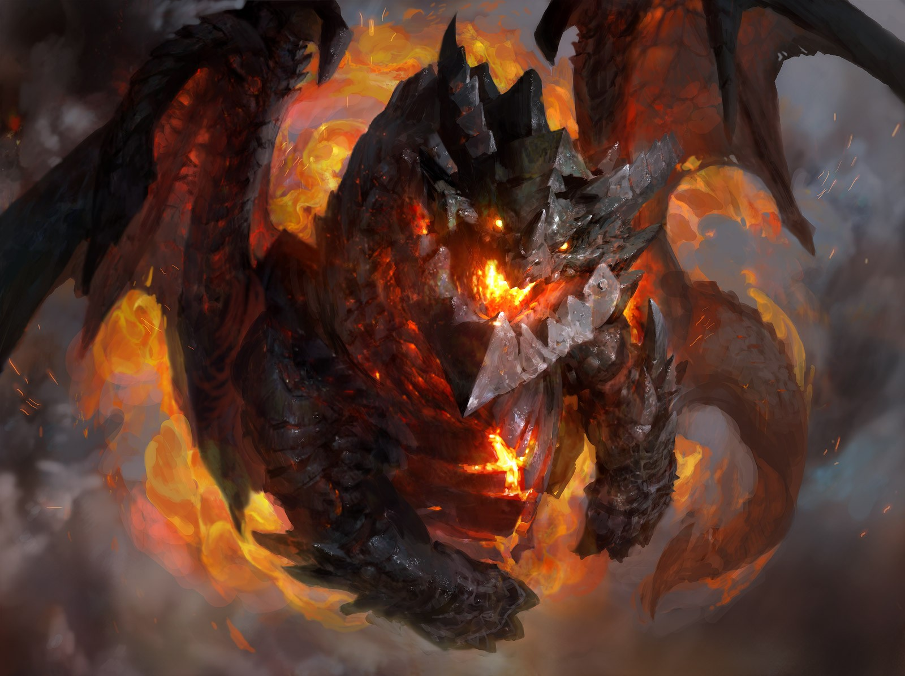

Бастион (настоящее имя БМ E54 «Бастион» )
Разрушительное Восстание машин позади и его ветеран, любознательный и очарованный природой омник Бастион, исследует мир, не забывая обходить людей, все еще полных страха перед машинами, стороной.

Нова (Агент X41822N и Новембер Терра)
Главный персонаж из вселенной StarCraft. Командир в совместных заданиях за элитных юнитов терранов для опытных игроков.

Смертокрыл Разрушитель, ранее известный как Нелтарион, Страж Земли
Один из пяти Аспектов Драконов и лидер черных драконов. Когда титаны покидали Азерот, они даровали Нелтариону власть над землей и её недрами, чтобы тот охранял мир и спокойствие на этой планете. Однако это благословение стало его проклятием...